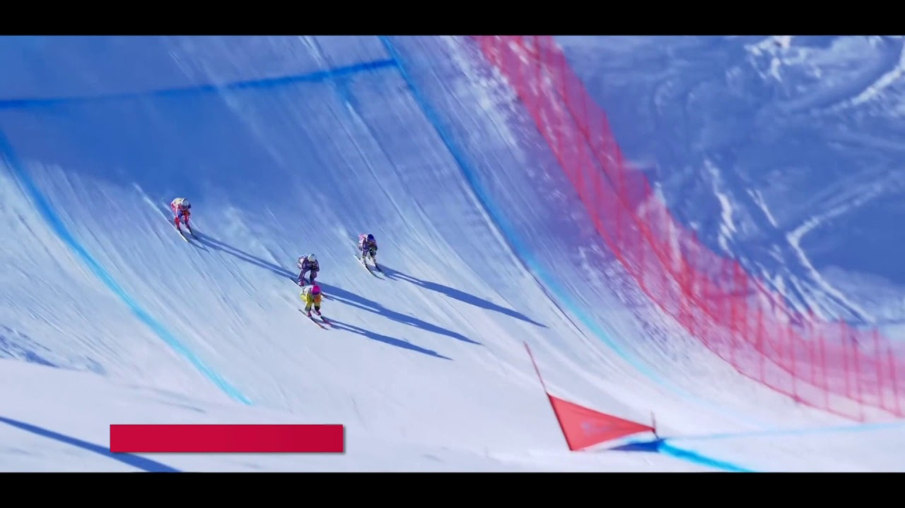
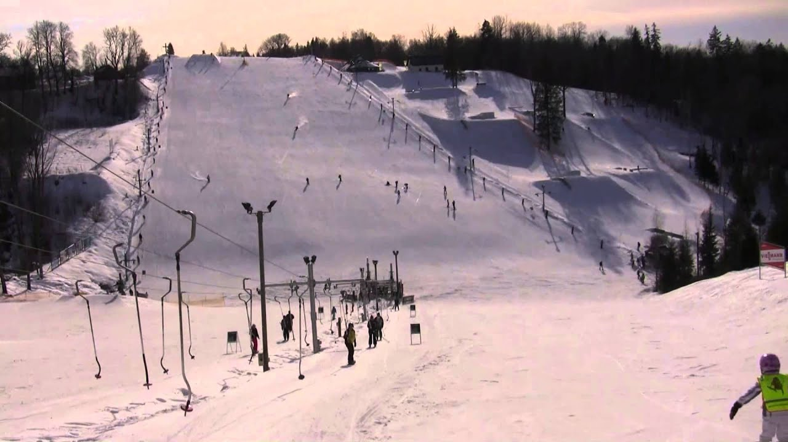
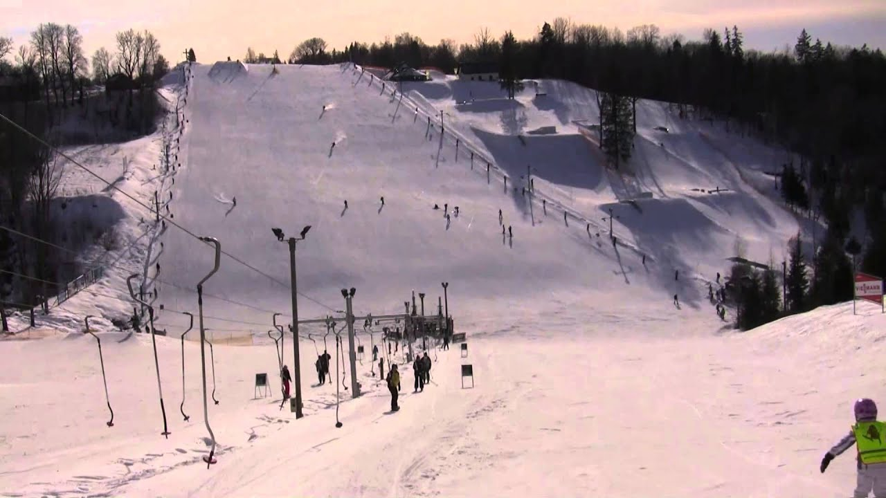

Lietuvos nacionalinė slidinėjimo asociacija
2020.10.30 03:16
Lietuvos nacionalinė slidinėjimo asociacija
Lietuvos nacionalinė slidinėjimo asociacija
Menu
Skip to content Apie mus LNSA struktūra Naujienos Nariams Slidinėjimas Kalnų slidinėjimas Snieglenčių sportas Disciplinos Slidinėjimas Varžybų kalendorius 2020/2021 m. Praėjusių sezonų varžybų rezultatai Slidinėjimo rinktinės Taisyklės Kalnų slidinėjimas VARŽYBŲ KALENDORIUS 2020-2021 m. LNSA kalnų slidinėjimo sportininkų kodai. Rinktinės Taisyklės Snieglenčių sportas ir slidinėjimas laisvuoju stiliumi Varžybų kalendorius Rinktinės Taisyklės FIS kodų suteikimas Kontaktai Contact us in EnglishFinalinis Lietuvos riedslidžių taurės etapas Anykščiuose
2020-10-02
Spalio 10 dieną, Anykščiuose, prie Medžių Lajų tako vyko paskutinis 2020 m. Lietuvos riedslidžių taurės etapas.
Nuostatai
Rezultatai
Galutinė taškų įskaita (po IV etapo)
Nuotraukų albumas
Published by admin , in Naujienos , Slidinėjimas .Kalnų slidinėjimo taurės pirmasis etapas Snow Arenoje
2020-09-23
Kvi e čiame į Lietuvos Kalnų slidinėjimo taurės pirmąjį etapą „Snow Arenoje“, Druskininkuose. Var žybos vyks Spalio 10 dieną.
1 etapas 2020 LT taurės1 Nuostatai
2020 Invitation 1st stage LT CUP EN
LTU SSL čemp varžybų Nuostatai
Lietuvos kalnų slidinėjimo taurės 2020-21 BENDRI Nuostatai
LTU CUP1 REZULTATAI SSL 2020.10.10
LTU ČEMPIONATAS REZULTATAI SSL 2020.10.10
LTU CUP1 REZULTATAI SL 2020.10.10
Varžybų video įrašas
FOTO
Published by admin , in Laisvasis stilius .Lietuvos jaunių, jaunučių ir vaikų slidinėjimo vasaros pirmenybės
2020-09-22
Rugsėjo 26-27 dienomis, Lietuvos žiemos sporto centre Ignalinoje, vyko Lietuvos jaunių, jaunučių ir vaikų slidinėjimo vasaros pirmenybės, kuriose dalyviai varžėsi distancijoje laisvu ir klasikiniu stiliumi.
Varžybų nuostatai
Rezultatai:
Rugsėjo 26 diena (Distancija F)
Rugsėjo 27 diena (Distancija C)
Rugsėjo 19-20 dienomis Lietuvos vasaros slidinėjimo čempionatas
2020-09-17
Vasarai pasibaigus, rugsėjo 19-20 dienomis, Lietuvos žiemos sporto centre Ignalinoje, vyko Lietuvos vasaros slidinėjimo čempionatas, kuriame dalyviai varžėsi sprinto laisvuoju stiliumi ir distancijos klasikiniu stiliumi rungtyse.
Nuostatai
Rezultatai:
Sprintas
Distancija klasika
Published by admin , in Naujienos , Slidinėjimas .
KVIETIMAS DALYVAUTI Kalnų slidinėjimo ir snieglenčių įrangos pirkimo KONKURSE
2020-09-17
Lietuvos nacionalinė slidinėjimo asociacija kviečia dalyvauti sporto prekių (kalnų slidinėjimo ir snieglenčių įranga) pirkimo konkurse.
KVIETIMAS:
LNSA Kvietimas kalnų slidės ir snieglentės
KALNŲ SLIDINĖJIMO IR SNIEGLENČIŲ ĮRANGOS TECHNINĖ SPECIFIKACIJA:
LNSA Kvietimas kalnų slidės ir snieglentės PRIEDAS NR1
PASIŪLYMAS DĖL
KALNŲ SLIDINĖJIMO IR SNIEGLENČIŲ ĮRANGOS:
LNSA Kvietimas kalnų slidės ir snieglentės PRIEDAS NR2
Published by admin , in Laisvasis stilius .Kviečiame išmokti čiuožti kalnų slidėmis ir snieglentėmis
2020-09-10
Jau šią savaitę bus paskelbtas konkursas naujai slidinėjimo įrangai įsigyti. Kviečiame dalyvauti konkurse.
Published by admin , in Laisvasis stilius .Sėkmingi pirmieji tarptautiniai startai riedslidžių sezone
2020-08-22
Dėl šių metų pavasarį prasidėjusios pandemijos didelė dalis sporto renginių liko neįvykdyti, o slidinininkai pasiruošimą naujam sezonui sutelkė gimtojoje šalyje. Siekdami įvertinti pasiruošimą vasaros metu, Lietuvos slidininkai išvyko į treniruočių stovyklas bei pirmąsias varžybas kaimyninėse valstybėse. Skaityti daugiau
Published by admin , in Naujienos , Slidinėjimas .II-asis Lietuvos riedslidžių taurės etapas
2020-08-04
Rugpjūčio 15 dieną, Ignalinoje, Lietuvos žiemos sporto centro trasoje vyko II-asis šių metų Lietuvos riedslidžių taurės etapas, kuriame dalyviai varžėsi distancijoje klasikiniu stiliumi.
II etapo rezultatai
Bendrosios įskaitos rezultatai
Published by admin , in Naujienos , Slidinėjimas .KVIETIMAS Į VISUOTINĮ NARIŲ SUSIRINKIMĄ IR SUSIRINKIMO DARBOTVARKĖ
2020-07-28
Sveiki Gerb. Ponios ir Ponai, Gerb. LNSA Nariai,
Pranešame, kad vadovaujantis Lietuvos nacionalinės slidinėjimo asociacijos (LNSA) valdybos 2020 m. liepos mėn. 28 d. sprendimu nutarta šaukti Visuotinį narių susirinkimą (VNS).
Susirinkimo data: 2020 m. rugpjūčio 12 d.
Susirinkimo laikas: 14.00 val. Registracija nuo 13.30 val.
Susirinkimo vieta (adresas): Vilniaus Universiteto (VU) bibliotekos Mokslinės komunikacijos ir informacijos centro (MKIC), konferencijų salėje, Saulėtekio al. 5, Vilniuje.
Susirinkimo darbotvarkė:
Visuotinio narių susirinkimo atidarymas
Pranešimai .1.1. Mandatų komisijos pranešimas.
1.2. Balsų skaičiavimo komisijos tvirtinimas.
1.3. Sekretoriato tvirtinimas.
1.4. Posėdžio reglamento tvirtinimas. 2019 m. LNSA valdybos ataskaita.
2.1. 2019 m. LNSA valdybos ataskaitos tvirtinimas. Audito paslaugų bendrovės ataskaitos už 2019 metus pristatymas. 2019 m. LNSA metinių finansinių ataskaitų rinkinio tvirtinimas. Revizijos ir etikos komisijos ataskaita. Pasisakymai.
Prezidentas Remigijus Arlauskas
Nuoroda į PDF dokumentą .
Published by admin , in Nariams , Naujienos , Slidinėjimas .Pirmosios sezono riedslidžių varžybos Lietuvoje
2020-07-16
Vasarai įsibegėjus, 2020 m. liepos 18 dieną (šeštadienį) Anykščių kartodromo trasoje vyko I-asis 2020 metų Lietuvos riedslidžių taurės etapas, kuriame dalyviai varžėsi distancijos laisvuoju stiliumi rungtyje. Dalyvių laukė išties greita ir dinamiška trasa.
2020 m. Lietuvos riedslidžių taurės bendri nuostatai
I etapo rezultatai
Bendrosios įskaitos rezultata i
Published by admin , in Naujienos , Slidinėjimas .Post navigation
← Older postsSekite naujienas Facebook’e
Partneriai
Proudly powered by WordPress | Theme RCG Forest- slidinėjimas | Mindaugo blogas
- Slidinėjimas - Blogger
- Slidinėjimo akademija
- Lygumų slidinėjimas (XC)
- Lėktuvu Archives - Slidinėjimas
- kalnumagija - Kalnų slidinėjimo blogas
- Lietuvos nacionalinė slidinėjimo asociacija
- Slidinėjimo kelionės
- slidinėjimas
- Slidinėjimas | Slidinėjimo kelionės | Slidinėjimo kurortai ...
- slidinėjimas | Mindaugo blogas
Iš pradžių tai buvo tik idėja tapti juridiniu vienetu, kad būtų galima oficialiai prašyti paramos, nes kalnų slidinėjimas lietuviams –… Į Pjongčangą – perrašyti istorijos 17. lapkričio 2017
- Slidinėjimas - Blogger
Slidinėjimas. Tik geriausi pasiūlymai slidinėjimo kelionėms į Austriją, Italiją, Slovakiją, Prancūziją ir kt. šalis vykstant autobusu, lėktuvu, savo ...
- Slidinėjimo akademija
Slidinėjimo kelionės - apsilankykite ir išsirinkite šalį, kelionės datą, bei pasinerkite į nepaprastą nuotykį. Visi išvykimai garantuoti!
- Lygumų slidinėjimas (XC)
Slidinėjimas yra originalus ir atsižvelgiant į dalyvių skaičių, viena iš skaitilngiausių šiaurinių („nordic“) sporto šakų, kurios vadinamos šiaurinėmis dėl kilmės geografine prasme, kadangi išsivystė šiaurinėje Europos dalyje, priešingai nei kalnų „alpine skiing “slidinėjimas, kurio kilmė siejama su Alpėmis.
- Lėktuvu Archives - Slidinėjimas
Slidinėjimo Akademijoje apsilankė ypatingas svečias - Lietuvos Respublikos Prezidentė. Ji ne tik domėjosi, kaip mums sekasi, stebėjo slidinėjančius klientus, bet ir susidomėjusi klausėsi apie vienintelę tokią sporto ir laisvalaikio erdvę ne tik Lietuvoje, bet ir visose Baltijos šalyse, kasdien sutraukiančią šimtus žiemos sporto gerbėjų.
- kalnumagija - Kalnų slidinėjimo blogas
Slidinėjimas 250 kilometrų trasų turinčiame Serre Chevalier yra tarsi kelionė: nuo neįprastai aukštai čia augančių medžių vainikų leisdamiesi žemyn jausitės, lyg čiuožtumėte per skirtingas šalis ir kraštovaizdžius.
- Lietuvos nacionalinė slidinėjimo asociacija
Slidinėjimas ir čiuožimas snieglente yra nesuvaržytos sporto šakos, kur kiekvienas gali judėti kur ir kaip tik nori, su sąlyga, kad jie laikysis taisyklių ir čiuoš atsižvelgdami į savo asmeninius gebėjimus ir kalnuose vyraujančią padėtį. Slidininkas ar snieglenintininkas priešakyje turi pirmumo teisę.
- Slidinėjimo kelionės
slidinėjimas Lyguminių slidžių video žiemai/vasarai. June 6, 2014 June 6, 2014 karalius Laisvalaikis/Hobbies laisvalaikis, slidinėjimas, vasara, žiema. Labai paprastas, bet tuo pačiu daug parodantis apie techniką ir slidinėjimo būdus žiemą vasarą su lyguminėmis slidėmis. Vilniuje jau taip pat atsiranda vienas kitas “vasarinis ...
- slidinėjimas
slidinėjimas statusas T sritis Kūno kultūra ir sportas apibrėžtis Kai kurių žiemos sporto šakų (biatlono, slidinėjimo dvikovės) varžybų sudedamoji dalis.atitikmenys: angl. skiing vok. Skisport, m rus. лыжный спортrus. лыжный спорт
- Slidinėjimas | Slidinėjimo kelionės | Slidinėjimo kurortai ...
Slidinėjimas Ötztal Pagrindiniai slidinėjimo kurortai : Obergurgl-Hochgurgl trasų 112 km, mėlynų 60 km, raudonų 33 km, juodų 14 km, aukščiai 1800 - 3030 m virš jūros lygio. Sölden trasų 146 km, mė...
Iš pradžių tai buvo tik idėja tapti juridiniu vienetu, kad būtų galima oficialiai prašyti paramos, nes kalnų slidinėjimas lietuviams –… Į Pjongčangą – perrašyti istorijos 17. lapkričio 2017
Slidinėjimas. Tik geriausi pasiūlymai slidinėjimo kelionėms į Austriją, Italiją, Slovakiją, Prancūziją ir kt. šalis vykstant autobusu, lėktuvu, savo ...
Slidinėjimo kelionės - apsilankykite ir išsirinkite šalį, kelionės datą, bei pasinerkite į nepaprastą nuotykį. Visi išvykimai garantuoti!
Slidinėjimas yra originalus ir atsižvelgiant į dalyvių skaičių, viena iš skaitilngiausių šiaurinių („nordic“) sporto šakų, kurios vadinamos šiaurinėmis dėl kilmės geografine prasme, kadangi išsivystė šiaurinėje Europos dalyje, priešingai nei kalnų „alpine skiing “slidinėjimas, kurio kilmė siejama su Alpėmis.
Slidinėjimo Akademijoje apsilankė ypatingas svečias - Lietuvos Respublikos Prezidentė. Ji ne tik domėjosi, kaip mums sekasi, stebėjo slidinėjančius klientus, bet ir susidomėjusi klausėsi apie vienintelę tokią sporto ir laisvalaikio erdvę ne tik Lietuvoje, bet ir visose Baltijos šalyse, kasdien sutraukiančią šimtus žiemos sporto gerbėjų.
Slidinėjimas 250 kilometrų trasų turinčiame Serre Chevalier yra tarsi kelionė: nuo neįprastai aukštai čia augančių medžių vainikų leisdamiesi žemyn jausitės, lyg čiuožtumėte per skirtingas šalis ir kraštovaizdžius.
Slidinėjimas ir čiuožimas snieglente yra nesuvaržytos sporto šakos, kur kiekvienas gali judėti kur ir kaip tik nori, su sąlyga, kad jie laikysis taisyklių ir čiuoš atsižvelgdami į savo asmeninius gebėjimus ir kalnuose vyraujančią padėtį. Slidininkas ar snieglenintininkas priešakyje turi pirmumo teisę.
slidinėjimas Lyguminių slidžių video žiemai/vasarai. June 6, 2014 June 6, 2014 karalius Laisvalaikis/Hobbies laisvalaikis, slidinėjimas, vasara, žiema. Labai paprastas, bet tuo pačiu daug parodantis apie techniką ir slidinėjimo būdus žiemą vasarą su lyguminėmis slidėmis. Vilniuje jau taip pat atsiranda vienas kitas “vasarinis ...
slidinėjimas statusas T sritis Kūno kultūra ir sportas apibrėžtis Kai kurių žiemos sporto šakų (biatlono, slidinėjimo dvikovės) varžybų sudedamoji dalis.atitikmenys: angl. skiing vok. Skisport, m rus. лыжный спортrus. лыжный спорт
Slidinėjimas Ötztal Pagrindiniai slidinėjimo kurortai : Obergurgl-Hochgurgl trasų 112 km, mėlynų 60 km, raudonų 33 km, juodų 14 km, aukščiai 1800 - 3030 m virš jūros lygio. Sölden trasų 146 km, mė...

 
